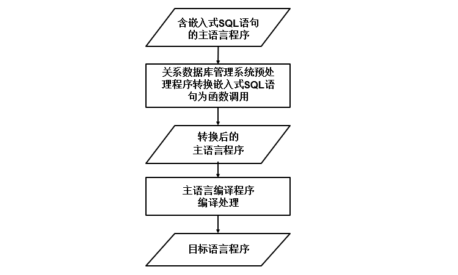
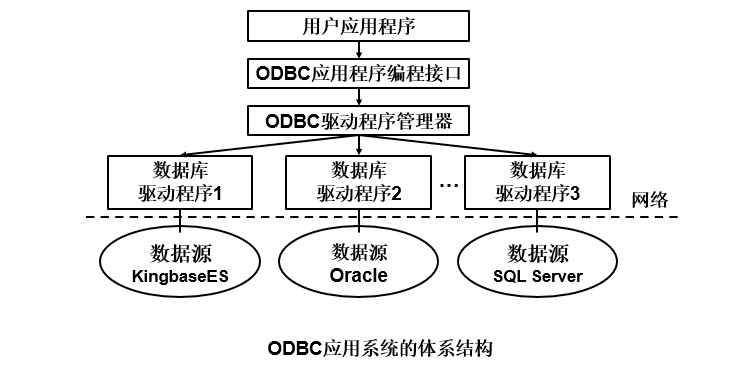
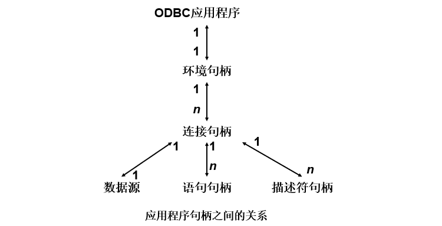
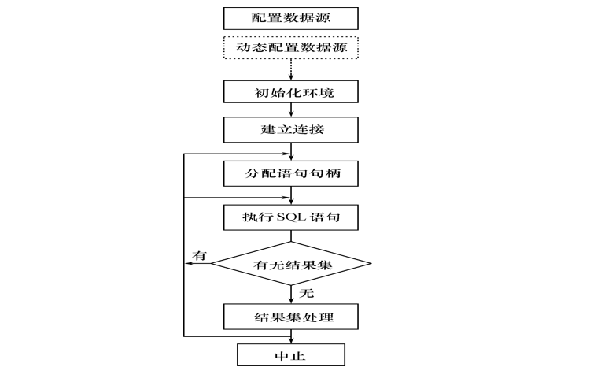

嵌入式SQL
::: tip SQL语言提供了两种不同的使用方式：
- 交互式
- 嵌入式
由于SQL语言是非过程性语言，事务处理应用需要高级语言，因此需要引入嵌入式SQL。 :::
嵌入式SQL的处理过程
嵌入式SQL是将SQL语句嵌入程序设计语言中，被嵌入的程序设计语言，如C、C++、Java，称为宿主语言，简称主语言。

嵌入式SQL语句与主语言之间的通信
将SQL嵌入到高级语言中混合编程，程序中会含有两种不同计算模型的语句
SQL语句
- SQL语句：描述性的面向集合的语句，负责操纵数据库。
- 高级语言语句：过程性的面向记录的语句，负责控制逻辑流程。
数据库工作单元与源程序工作单元之间的通信包括：
- 向主语言传递SQL语句的执行状态信息，使主语言能够据此控制程序流程，主要用SQL通信区实现
- 主语言向SQL语句提供参数，主要用主变量实现
- 将SQL语句查询数据库的结果交主语言处理，主要用主变量和游标实现
嵌入式SQL语句中可以使用主语言的程序变量来输入或输出数据。
在SQL语句中使用的主语言程序变量简称为主变量。
主变量的类型有：
- 输入主变量：由应用程序对其赋值，SQL语句引用。
- 输出主变量：由SQL语句对其赋值或设置状态信息，返回给应用程序。
指示变量是一个整型变量，用来“指示”所指主变量的值或条件，一个主变量可以附带一个指示变量。
指示变量的用途：指示输入主变量是否为空值；检测输出变量是否为空值，值是否被截断。
为什么要使用游标，因为SQL语言与主语言具有不同数据处理方式：
- SQL语言是面向集合的，一条SQL语句原则上可以产生或处理多条记录。
- 主语言是面向记录的，一组主变量一次只能存放一条记录。
仅使用主变量并不能完全满足SQL语句向应用程序输出数据的要求，嵌入式SQL引入了游标的概念，用来协调这两种不同的处理方式。
游标是系统为用户开设的一个数据缓冲区，存放SQL语句的执行结果。每个游标区都有一个名字。用户可以用SQL语句逐一从游标中获取记录，并赋给主变量，交由主语言进一步处理。
不用游标的SQL语句
不用游标的SQL语句：
- 说明性语句
- 数据定义语句
- 数据控制语句
- 查询结果为单记录的SELECT语句
- 非CURRENT形式的增删改语句
查询结果为单记录的SELECT语句，非CURRENT形式的增删改语句，这两类语句不需要使用游标，只需用INTO子句指定存放查询结果的主变量。
使用游标的SQL语句
必须使用游标的SQL语句：
- 查询结果为多条记录的SELECT语句
- CURRENT形式的UPDATE语句
- CURRENT形式的DELETE语句
动态SQL
静态嵌入式SQL：静态嵌入式SQL语句能够满足一般要求，但无法满足要到执行时才能够确定要提交的SQL语句、查询的条件 。 动态嵌入式SQL：允许在程序运行过程中临时“组装”SQL语句，支持动态组装SQL语句和动态参数两种形式 。
过程化SQL
基本的SQL是高度非过程化的语言，嵌入式SQL借助高级语言的控制功能实现过程化。
“过程化SQL”通常指的是使用存储过程的SQL编程。存储过程是一组预编译的SQL语句，它们被存储在数据库中并可以被重复调用。这种方法允许将一系列SQL语句封装到一个单独的可执行单元中，提供了更高的模块化和可维护性。
过程化SQL的块结构
过程化SQL的基本结构是块，块之间可以互相嵌套 ，每个块完成一个逻辑操作。
基本结构：
-
定义部分
DECLARE 变量、常量、游标、异常等定义的变量、常量等只能在该基本块中使用，当基本块执行结束时，定义就不再存在。
-
执行部分
BEGIN SQL语句、过程化SQL的流程控制语句 EXCEPTION 异常处理部分 END；
变量和常量的定义
在MySQL中，变量和常量的定义和赋值语法略有不同。以下是在MySQL中定义和使用变量和常量的语法：
- 变量定义
-- 定义变量
SET @variable_name = value;
-- 或者使用 DECLARE
DECLARE variable_name datatype [DEFAULT value];
-- 赋值
SET @variable_name = expression;在MySQL中，
使用 SET 语句来定义和赋值变量，可以在一个会话的任何地方声明，作用域是整个会话，称为用户变量。
使用 DECLARE 语句来定义局部变量，主要用在存储过程中，或者是给存储传参数中。
::: tip 区别
在调用存储过程时，以declare声明的变量都会被初始化为null。而会话变量（即@开头的变量）则不会被再初始化，在一个会话内，只须初始化一次，之后在会话内都是对上一次计算的结果，就相当于在是这个会话内的全局变量。
:::
- 常量定义
MySQL没有直接支持用户定义的常量，但可以使用用户变量来模拟常量的行为。用户变量在会话结束前保持不变，因此可以看作是会话级别的常量。例如：
-- 定义"常量"
SET @constant_name = constant_value;
-- 使用"常量"
SELECT @constant_name;::: tip
在MySQL中，没有像其他一些数据库管理系统那样明确的常量定义语法。
:::
- 赋值语句
set @num = 1;
set @num := 1;
select @num := 1;
select @num := 字段名 from 表名 where ...select语句一般用来输出用户变量，比如select @变量名，用于输出数据源不是表格的数据。
使用set时可以用“=”或“:=”，但是使用select时必须用“:=赋值”。
流程控制
在MySQL中，条件控制语句通常用于根据特定条件执行或跳过某些SQL语句。以下是MySQL中常见的条件控制语句：
条件控制语句
-
IF语句
IF search_condition THEN statement_list [ELSEIF search_condition THEN statement_list]... [ELSE statement_list] END IF-- 例如： SET @num = 10; IF @num > 5 THEN SELECT 'Number is greater than 5'; ELSE SELECT 'Number is not greater than 5'; END IF; -
CASE语句
-- 1. CASE case_value WHEN when_value THEN statement_list [WHEN when_value THEN statement_list]... [ELSE statement_list] END CASE -- 2. CASE WHEN search_condition THEN statement_list [WHEN search_condition THEN statement_list] ... [ELSE statement_list] END CASE-- 例如： CASE age WHEN 20 THEN SET @count1=@count1+1; ELSE SET @count2=@count2+1; END CASE; CASE WHEN age=20 THEN SET @count1=@count1+1; ELSE SET @count2=@count2+1; END CASE;
循环控制语句
-
LOOP 语句
[begin_label:]LOOP statement_list END LOOP [end_label]LOOP 语句可以使某些特定的语句重复执行。与 IF 和 CASE 语句相比，LOOP 只实现了一个简单的循环，并不进行条件判断。
LOOP 语句本身没有停止循环的语句，必须使用 LEAVE 语句等才能停止循环，跳出循环过程。
-
WHILE 语句
[begin_label:] WHILE search_condition DO statement list END WHILE [end label]-- 例如： WHILE @count<100 DO SET @count=@count+1; END WHILE; -
ITERATE 语句
ITERATE label用来跳出本次循环，直接进入下一次循环。
-- 例如： add_num:LOOP SET @count=@count+1; IF @count=100 THEN LEAVE add_num; ELSE IF MOD(@count,3)=0 THEN ITERATE add_num; SELECT * FROM employee; END LOOP add_num;::: tip
LEAVE 语句和 ITERATE 语句都用来跳出循环语句，但两者的功能是不一样的。
LEAVE 语句是跳出整个循环，然后执行循环后面的程序。而 ITERATE 语句是跳出本次循环，然后进入下一次循环。
:::
-
REPEAT 语句
[begin_label:] REPEAT statement_list UNTIL search_condition END REPEAT [end_label]REPEAT 语句是有条件控制的循环语句，每次语句执行完毕后，会对条件表达式进行判断，如果表达式返回值为 TRUE，则循环结束，否则重复执行循环中的语句。
-- 例如： REPEAT SET @count=@count+1; UNTIL @count=100 END REPEAT;
错误处理
如果过程化SQL在执行时出现异常，则应该让程序在产生异常的语句处停下来，根据异常的类型去执行异常处理语句。
存储过程和函数
过程化SQL块类型
- 命名块：编译后保存在数据库中，可以被反复调用，运行速度较快，过程和函数是命名块；
- 匿名块：每次执行时都要进行编译，它不能被存储到数据库中，也不能在其他过程化SQL块中调用；
存储过程
存储过程：由过程化SQL语句书写的过程，经编译和优化后存储在数据库服务器中，使用时只要调用即可。
存储过程的优点：
- 运行效率高
- 降低了客户机和服务器之间的通信量
- 方便实施企业规则
存储过程的用户接口
-
创建存储过程
-
执行存储过程
-
修改存储过程
-
删除存储过程
函数
::: tip 函数和存储过程的区别
- 存储过程主要用于执行一系列SQL语句，而函数主要用于计算并返回一个值。
- 存储过程可以包含事务控制语句，而函数不能。
- 存储过程可以通过输出参数传递多个值，而函数只能通过返回值传递一个值。
- 存储过程的调用通常使用CALL语句，而函数可以在SELECT语句或其他表达式中直接调用。
选择存储过程还是函数取决于需求，如果需要执行一系列的操作或者包含事务控制，通常会选择存储过程。如果只需要计算并返回一个值，则选择函数。
:::
ODBC编程
ODBC优点：
- 移植性好
- 能同时访问不同的数据库
- 共享多个数据资源
ODBC概述
ODBC产生的原因：由于不同的数据库管理系统的存在，在某个关系数据库管理系统下编写的应用程序就不能在另一个关系数据库管理系统下运行。许多应用程序需要共享多个部门的数据资源，访问不同的关系数据库管理系统。
ODBC是微软公司开放服务体系中有关数据库的一个组成部分，提供了一组访问数据库的应用程序编程接口。
ODBC的作用是：规范应用开发，规范关系数据库管理系统应用接口。
ODBC工作原理概述
ODBC应用系统的体系结构由四部分组成：用户应用程序，ODBC驱动程序管理器，数据库驱动程序，数据源。

-
用户应用程序
使用ODBC开发的应用系统程序简称为ODBC应用程序，包括的内容有：
- 请求连接数据库
- 向数据源发送SQL语句
- 为SQL语句执行结果分配存储空间，定义所读取的数据格式
- 获取数据库操作结果或处理错误
- 进行数据处理并向用户提交处理结果
- 请求事务的提交和回滚操作
- 断开与数据源的连接
-
ODBC驱动程序管理器
用来管理各种驱动程序 。
包含在ODBC32.DLL中，管理应用程序和驱动程序之间的通信。
建立、配置或删除数据源，并查看系统当前所安装的数据库ODBC驱动程序。
主要功能：
- 装载ODBC驱动程序
- 选择和连接正确的驱动程序
- 管理数据源
- 检查ODBC调用参数的合法性
- 记录ODBC函数的调用等
-
数据库驱动程序
ODBC通过驱动程序来提供应用系统与数据库平台的独立性。
ODBC应用程序不能直接存取数据库，其各种操作请求由驱动程序管理器提交给某个关系数据库管理系统的ODBC驱动程序，通过调用驱动程序所支持的函数来存取数据库。
数据库的操作结果也通过驱动程序返回给应用程序，如果应用程序要操纵不同的数据库，就要动态地链接到不同的驱动程序上。
驱动程序类型：
-
单束
数据源和应用程序在同一台机器上。驱动程序相当于数据管理器 ，直接完成对数据文件的I/O操作。
-
多束
支持客户机—服务器、客户机—应用服务器/数据库服务器等网络环境下的数据访问。
由驱动程序完成数据库访问请求的提交和结果集接收。
应用程序使用驱动程序提供的结果集管理接口操纵执行后的结果数据。
-
-
数据源
最终用户需要访问的数据，包含了数据库位置和数据库类型等信息，是一种数据连接的抽象。
数据源对最终用户是透明的。
ODBC API 基础
ODBC 应用程序编程接口的一致性包括 ：
- API一致性：包含核心级、扩展1级、扩展2级
- 语法一致性：包含最低限度SQL语法级、核心SQL语法级、扩展SQL语法级
函数概述
ODBC 3.0 标准提供了76个函数接口
- 分配和释放环境句柄、连接句柄、语句句柄
- 连接函数
- 与信息相关的函数
- 事务处理函数
- 执行相关函数
- 编目函数
句柄及其属性
句柄是32位整数值，代表一个指针。
ODBC 3.0中句柄分类：
- 环境句柄
- 连接句柄
- 语句句柄
- 描述符句柄
应用程序句柄之间的关系：
每个ODBC应用程序需要建立一个ODBC环境，分配一个环境句柄，存取数据的全局性背景，如环境状态、当前环境状态诊断、当前在环境上分配的连接句柄等。
一个环境句柄可以建立多个连接句柄，每一个连接句柄实现与一个数据源之间的连接
在一个连接中可以建立多个语句句柄，它不只是一个SQL语句，还包括SQL语句产生的结果集以及相关的信息等。
描述符句柄是描述SQL语句的参数、结果集列的元数据集合。

数据类型
ODBC数据类型：
- SQL数据类型：用于数据源
- C数据类型 ：用于应用程序的C代码
ODBC的工作流程
